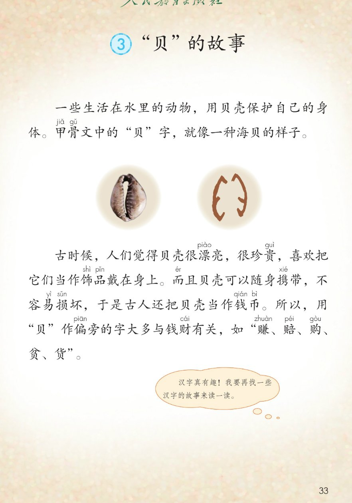
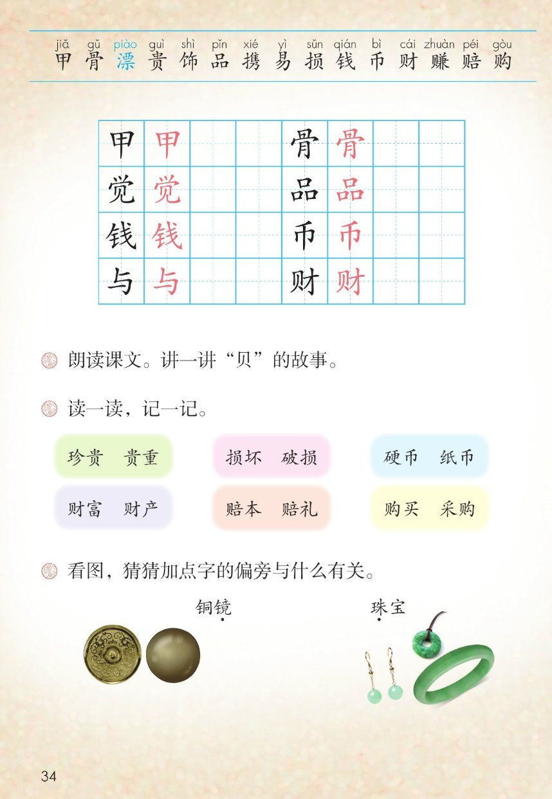

×
🔊 手机听不到声音怎么办？
① 先把手机
媒体音量调大 ，确认没开静音、没连蓝牙耳机；在微信里打开的，点右上角「⋯ → 用浏览器打开」。
② 还是没声音？到应用商店免费下载
Microsoft Edge 浏览器 （它自带朗读发声），用它打开本页面就能出声。
③ 换了 Edge 仍然没声音，说明这部手机的
硬件/系统不支持 网页朗读（多为老旧机型）；近几年买的新手机一般都能正常播放。
→ 打开声音自检
🐚 识字 3《"贝"的故事》· 有声图文带读
语文 · 第三单元·识字 · 课本 第 33~34 页 · 一个字的前世今生
课文 2 段 · 8 句
会认字 15
会写字 8
听写词 10
近义词 4 组
深入理解 8 题
本领 讲汉字故事
🎧 五步学（可随时点任意一句、一个字、一个词单独听）： ① 听读课文 ——2 段 8 句，一句一句读，读到哪句哪句发光；开「跟读」后读完一句留时间自己读。② 学字词 ——15 个会认字、8 个会写字（含书写提示），点一个读一个；留意蓝色的多音字「漂」。③ 词语·听写·造句 ——读课本第 34 页三道课后题和 6 框 12 个词，听写 10 个词，再听 4 组近义词辨析。 ④ 深入理解 ——8 道题（认知 / 理解 / 运用 / 拓展），开放题答案不唯一，先想后看。⑤ 讲故事·齐读 ——按 5 步把"贝"的故事讲出来，再按课后题①分工朗读全课。
📚 本册第三单元·识字（照课本第 29、31、33 页页眉）： 1 神州谣 → 2 传统节日 → 3 "贝"的故事（本课）前后连起来看：识字 1 夸祖国 → 识字 2 唱节日 → 识字 3 讲汉字的故事，都在说中国人的生活
📖 课文出处（课本第 33 页） ：本课无脚注；课题右上角无注释序号。课文配图：海贝实物照片与甲骨文「贝」字对照
点段前的 ①~② 听整段
🐚 课题 ：③ "贝"的故事
（本课课题无注音、无注释序号，照课本第 33 页）
🔁 跟读模式：关
👁 隐藏注音（自测用）
注音只标本课要认、要写的字和课本明确标了音的字，每字只注一次；会写字里课本未注的「觉 / 与」按字典补注，供参考
🎤 朗读要求 · 朗读并讲故事（课后题①的老师标准） 读准字音 ：甲 jiǎ 、骨 gǔ 、漂 piào （蓝色多音字，另读 piāo）、贵 guì 、饰 shì 、品 pǐn 、携 xié 、易 yì 、损 sǔn 、钱 qián 、币 bì 、财 cái 、赚 zhuàn 、赔 péi 、购 gòu （照课本第 33~34 页）；读好长句 ：第二段句子长，逗号处换气 ，别把饰品、携带、损坏读断；不添不漏 ：引号照课本显示层照录；「觉 / 与」是课本未注音的会写字，页面按字典补注，供参考 ；读出趣味 ：像讲一个新发现；讲到所以 时放慢，让大家等着听结论；讲故事 ：读熟了按后面的 5 步，把"贝"的故事讲给别人听。
①
一些生活在水里的动物，用贝壳保护自己的身体。
甲jiǎ 骨gǔ 文中的"贝"字，就像一种海贝的样子。
②
古时候，人们觉jué 得贝壳很漂piào 亮，很珍贵guì ，
喜欢把它们当作饰shì 品pǐn 戴在身上。
而ér 且贝壳可以随身携xié 带，不容易yì 损sǔn 坏，于是古人还把贝壳当作钱qián 币bì 。
所以，用"贝"作偏piān 旁的字大多与yǔ 钱财cái 有关，
如"赚zhuàn 、赔péi 、购gòu 、贫、货"。
🤔 想一想（点我可跳过）
点一张图，听读整页

第 33 页 · 课题、短文全文与对照图

第 34 页 · 生字表与课后题
📖 人教版《语文》二年级下册 · 课本第 33~34 页 · 图片仅供个人学习，版权归人民教育出版社所有
点一个字，听读音、词语和课文里的句子；照课本第 34 页生字表顺序，「漂」印蓝＝多音字
结构、部首、笔画与书写提示为通用规范，供参考，以教材和字典为准
甲
jiǎ
甲骨文 · 甲鱼
5 画 · 独体（甲）
竖写在正中，框上宽下窄
骨
gǔ
甲骨文 · 骨头
9 画 · 上下（骨）
上小下大，月字底左变撇
觉
jué
觉得 · 觉察
9 画 · 上下（⺍）
三点头盖住，见字竖弯钩舒展
品
pǐn
饰品 · 品德
9 画 · 品字（口）
三个口上一下二，大小相近
钱
qián
钱币 · 金钱
10 画 · 左右（钅）
金字旁窄，右边的戋两横错开
币
bì
钱币 · 纸币
4 画 · 独体（巾）
撇平而短，巾字竖写在正中
与
yǔ
与钱财有关 · 与其
3 画 · 独体（与）
竖折折钩一笔连，末横托住
财
cái
钱财 · 财富
7 画 · 左右（贝）
贝字旁窄长，才字的竖挺直
点一行，听题目、句子和词语
📖 课后题（课本第 34 页照录） ：下面 10 行是三道题、6 框 12 词照录与看图猜偏旁。
课后题 ① 朗读课文。讲一讲"贝"的故事。
课后题 ② 读一读，记一记。
词框 一 珍贵 贵重
词框 二 损坏 破损
词框 三 硬币 纸币
词框 四 财富 财产
词框 五 赔本 赔礼
词框 六 购买 采购
课后题 ③ 看图，猜猜加点字的偏旁与什么有关。
课本图名 镜 ：铜镜 珠 ：珠宝
读两遍 → 你在纸上写 → 报答案 → 听示范句
准备听写 · 共 10 个词
○ ○ ○
点下面的「开始听写」，听到一个词就写一个词。
▶ 开始听写
🔁 再读一遍
👁 看答案
点词听读，点句子听示范句，再自己说一句
1 贝壳 课文核心词
示范句：一些动物用贝壳保护自己的身体。
✏️ 我也能说：谁用什么做什么
2 甲骨文 会写字 · 甲、骨
示范句：甲骨文中的"贝"字，就像一种海贝的样子。
✏️ 我也能说：说说甲骨文
3 觉得 会写字 · 觉
示范句：人们觉得贝壳很漂亮。
✏️ 我也能说：我觉得什么怎么样
4 饰品 会写字 · 品
示范句：古人把贝壳当作饰品戴在身上。
✏️ 我也能说：把什么当饰品
5 钱币 会写字 · 钱、币
示范句：古人还把贝壳当作钱币。
✏️ 我也能说：说说钱币
6 与…有关 会写字 · 与
示范句：用"贝"作偏旁的字大多与钱财有关。
✏️ 我也能说：与什么有关
7 钱财 会写字 · 财
示范句：用"贝"作偏旁的字大多与钱财有关。
✏️ 我也能说：哪个字与钱财有关
8 珍贵 会认字 · 贵
示范句：古时候，贝壳很珍贵。
✏️ 我也能说：什么很珍贵
9 损坏 会认字 · 损
示范句：贝壳可以随身携带，不容易损坏。
✏️ 我也能说：什么容易损坏
10 汉字 课文核心词
示范句：汉字真有趣！
✏️ 我也能说：说说汉字
相同点 / 不一样在哪 / 各造一句
漂亮 — 美丽
相同：都写好看 。
不一样：漂亮 是课文里的原词，贝壳很漂亮，口语里最常用，还常说这件事办得漂亮；美丽 多写景和人的样子，带一点文气，比如美丽的贝壳、美丽的花朵。
漂亮：贝壳很漂亮。
珍贵 — 宝贵
相同：都写难得、价值高 。
不一样：珍贵 是课文里的原词，很珍贵，多说东西稀少难得；宝贵 除了说东西，更常说经验、时间、意见这些看不到的东西。
珍贵：贝壳很珍贵。
保护 — 保卫
相同：都写护着，不让受伤 。
不一样：保护 是课文里的原词，用贝壳保护自己的身体，日常的小心看护多用它；保卫 口气大，常说保卫祖国、保卫家园。
保护：动物用贝壳保护自己的身体。
喜欢 — 喜爱
相同：都写心里乐意、愿意亲近 。
不一样：喜欢 是课文里的原词，喜欢把它们当作饰品，口语里最常用；喜爱 多带一点疼爱的味道，常说深受喜爱。
喜欢：人们喜欢把贝壳当作饰品。
贝字旁一家 赚、赔、购、贫、货
金字旁 镜：铜镜
王字旁 珠：珠宝
猜字小窍门 看偏旁，猜意思
标「答案不唯一」的题，说得有道理都对
认知 课文一共有几个自然段？每段主要写了什么？看解析
🤔 想一想
解析：
贝壳护身，贝字像海贝。
先当饰品，再当钱币。
贝字旁的字大多与钱财有关。
理解 贝壳为什么能从饰品变成钱币？课文用了哪两个词来说明？看解析
🤔 想一想
解析：
随身携带、不容易损坏。
漂亮珍贵，大家才愿意收。
又好看又结实又好带，才当钱。
理解 课后题③：铜镜的「镜」和珠宝的「珠」，偏旁各与什么有关？你是怎么猜的？看解析
🤔 想一想
解析：
金字旁，和金属有关。
王字旁本来的玉字，和玉石有关。
看偏旁猜，查字典验证。
🌈 答案不唯一，说得有道理都对
理解 「甲骨文中的"贝"字，就像一种海贝的样子」这句话是什么意思？看解析
🤔 想一想
解析：
甲骨文是刻在龟甲兽骨上的古文字。
两笔张开，正像贝壳。
最早的汉字是从图画变来的。
理解 最后一句「如"赚、赔、购、贫、货"」里的如字是什么意思？这五个字为什么放在这里？看解析
🤔 想一想
解析：
如，就是比如、举例。
全带贝字旁，全和钱财有关。
先说规律，再举例子。
运用 照课文找规律的办法，说说带三点水的字大多与什么有关，再写出三个这样的字。看解析
🤔 想一想
解析：
大多与水有关：江、河、湖。
木字旁与树木有关：树、林。
带什么旁的字大多与什么有关。
🌈 答案不唯一，说得有道理都对
运用 课后题①：讲一讲"贝"的故事。照五步支架，用自己的话讲给家人听。看解析
🤔 想一想
解析：
护身、像形、饰品、钱币、偏旁。
先、再、接着、所以。
家人、同学都可以。
🌈 答案不唯一，说得有道理都对
拓展 你最喜欢哪个汉字？它像什么、和什么有关？试着像课文一样讲一讲它的故事。看解析
🤔 想一想
解析：
山字三笔像山峰。
休字是人靠着树休息。
看看它的甲骨文长什么样。
🌈 答案不唯一，说得有道理都对
点一步，听这一步
1
先 · 贝壳护身
2
再 · 贝字像海贝
3
接着 · 当饰品
4
然后 · 当钱币
5
最后 · 变偏旁
💬 课后题①照录 ：朗读课文。讲一讲"贝"的故事。先 说贝壳护身 → 再 说贝字像海贝 → 接着 说当饰品 → 然后 说当钱币 → 最后 说贝字旁与钱财有关。
课后题①：点一张卡，听这一句
🐚 齐读·护身
一些生活在水里的动物，用贝壳保护自己的身体。
💬 平稳，壳是保护伞
🔍 齐读·像形
甲骨文中的"贝"字，就像一种海贝的样子。
💬 看图对照，两笔像贝壳
💎 小组·饰品
古时候，人们觉得贝壳很漂亮，很珍贵，
💬 漂是多音字，漂亮读三声
🧿 小组·戴上
喜欢把它们当作饰品戴在身上。
💬 神气一点，饰品读清楚
🎒 男女生·携带
而且贝壳可以随身携带，不容易损坏，
💬 而、携、损，一字不错
🪙 男女生·钱币
于是古人还把贝壳当作钱币。
💬 变成钱，读出新发现
🧩 齐读·偏旁
所以，用"贝"作偏旁的字大多与钱财有关，
💬 所以放慢，等结论
📜 全班·举例
如"赚、赔、购、贫、货"。
💬 五个字一组，读得干脆